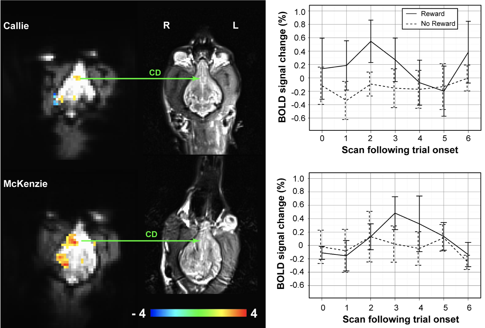

Do our pets love us—or just the treats we give them? To find out, Gregory Berns, a neuroscientist at Emory University, trained dogs to go inside an MRI scanner. He managed to map their brains as they responded to different stimuli and describes the surprising results in his new book, What It’s Like to Be a Dog.
When National Geographic caught up with Berns by phone in his office in Atlanta, he explained why it’s hard to tell if dogs understand human language, what he hopes to learn from the brains of animals threatened with extinction, and why sea lions love to dance. [Learn why dogs come in so many shapes and sizes.]
About five years ago I got this crazy idea to see if I could train my own dog to go into an MRI to see what she was thinking and whether she reciprocated any feelings I have for her.
Callie is a black terrier mix, adopted from one of the local shelters here. She had no particularly defining traits other than she was high energy and very curious, like many terriers are.
I teamed up with a local dog trainer and worked through the details of how to go about training a dog to go in the MRI. The first thing we did was build an MRI simulator in my home and get her used to the very loud sounds these machines make. I recorded the sounds of the magnets and played them at home, at low volume, while I played a game with her, gradually increasing the volume to the real level. It took about 2 to 3 months, working mostly by trial and error. But it turned out to be easier than I thought it would be.

We started with simple things, like teaching her a hand signal that meant she would get a treat and another that meant no treat. When we did that, we were able to observe activity in the reward pathways of her brain indicating that the technique worked.
Encouraged by our success with Callie, we put out word to the dog community here in Atlanta that we were looking for volunteers to participate in this project.
We began holding MRI classes every Sunday. People would bring their dogs in and we’d give them mock-ups of the MRI to take home for practice. Within a year we had a team of close to 20 dogs.
With that many participants, we started doing much more interesting, complicated things in the scanner, like asking how their smell system works, how they recognize people and their household by their own scent.
Scientists find it hard to accept the idea that animals have feelings. Most people who live with dogs understand this intuitively. The confusion comes because we have language and can label those feelings. We have words for things like love, fear, sadness, or guilt. Everything we started doing to elicit positive emotions showed that dogs had corresponding parts of their brains to humans.

The caudate nucleus is a structure common to all brains, particularly in mammals, which we know to have the richest density of dopamine receptors. Dopamine used to be thought of as a pleasure neurotransmitter but it’s much more complex than that.
The caudate nucleus is active when an individual is in a state of anticipation—something happens and they have to decide what to do with that information. It’s particularly strong when that information is in positive domains. You see something, you want to approach it, maybe consume it.
When we see this structure active in dogs, we can interpret that they are experiencing something important to them and something they like. This is completely analogous to what happens in human brains under the same conditions.
Obviously dog brains are not the same as humans. One big difference is in the size. A dog brain is about the size of a lemon, at best, if it’s a big dog. There’s not the same real estate in there, so they can’t do some things we can do.
Probably the biggest area of difference is in language. You don’t need an MRI to know that dogs can’t speak to us, at least not with words. One outstanding question we are currently working on is trying to figure out what they actually understand about our speech.
We can teach them all sorts of tricks and tasks with verbal commands. But it’s unclear whether dogs understand that words are symbolic place holders for other things or, more likely, that dogs simply process human speech in a much more direct way. They are probably just linking sounds to particular actions without a deep understanding of the abstract, semantic quality.
There’s a couple of dogs out there who’ve been documented to have vocabularies of 1,000 words, but none of the dogs in our project came even close to that. We did a project where we taught them the names of two new toys—and it took forever! [Laughs]
It’s related to getting food versus just praise. With humans you can come up with similar analogies as to what motivates us to like another person. With dogs there’s always this overriding question: Are they just trying to scam us by acting cute?
In the experiment, we showed them an object that signaled they would get food, then another one signaling that their owner would pop into view and say, “Good girl!” There were a handful of dogs that preferred praise over food. There were also a couple of dogs at the other end of the spectrum. For them it really was all about the food! [Laughs] But the vast majority of dogs had equal responses to both food and praise.
It quickly became apparent that if dogs can do all these things, it’s a sure bet many other animals can do them as well. So we began looking at the brains of other animals including sea lions and dolphins.
These experiments are quite different because we can’t train these animals to go in a scanner. Instead, we relied on obtaining brain specimens of animals that had passed away, then analyzing the pathways in their brains and comparing them to humans as well as other animals.
One of the things we became interested in with sea lions was their ability to follow rhythmic patterns—more simply, their ability to dance. There are several theories about this. One is that only animals that have a flexible vocal apparatus have the ability to dance because it’s linked to rhythm.
"But by seeing [rhythm] in animals like sea lions, which don’t have language, it showed that it’s a much more fundamental trait in animals—and probably evolved long before humans came along."
Sea lions aren’t very vocally flexible. They can bark and do a few things like dogs. But one sea lion in California was able to learn to follow rhythm. Not just something like a metronome, but actual music rhythms.
It’s similar to tap dancing, in the sense that when humans dance to music there’s a very direct linkage between the sounds we hear and our motor systems. The music entrains our feet and hands to move in that rhythm.
That ability was thought to be learned through language because language itself is rhythmic. But by seeing this ability in animals like sea lions, which don’t have language, it showed that it’s a much more fundamental trait in animals—and probably evolved long before humans came along.
The thylacine, also known as the Tasmanian tiger, is believed to have gone extinct in 1936. It looked very much like a dog or wolf but was actually a carnivorous marsupial not related to canids because marsupials split off from other mammals over 100 million years ago.
The fact that it looks like a dog results from what we call “convergent evolution,” meaning that this animal, which comes from a different lineage, evolved to look like a dog because its environmental niche is the same as that of a wild dog.
I wanted to know whether its brain looked like that of a dog. This is a challenge because there aren’t many specimens available. So I had to search the world for any intact brains. Eventually, I was able to scan two of them: one here in the U.S. and the other in Australia. We found that the brain is very different than a dog’s. It’s closer to other marsupials, like the Tasmanian devil or a kangaroo.
By analyzing these specimens, we were able to reconstruct the relative size of the frontal lobe to get some sense of what kind of problem-solving ability these animals had and whether they were social or not. It showed that it was probably not nearly as social as a dog. In fact, it was probably quite asocial, but still a sophisticated problem-solver based on the connections in its frontal lobe. They wouldn’t have made good pets at all! [Laughs]
The idea is to create a digital archive of the brains of these animals before they disappear. By reconstructing their brains, we hope to have a better understanding of what makes a tiger a tiger or a bear a bear, and why certain animals may be more likely to go extinct as their habitats change. This will enable us to focus our attention on which animals we need to help save before they’re gone, assuming people care about that.
Most scientists now agree that we’re very likely entering the next great extinction. In part, it’s due to climate change but it’s also the result of the carving up of the habitats where animals live. Humans have encroached pretty much on all land masses on the planet, especially where the large megafauna—whales, elephants, lions or bears—need to be able to move to survive. But as their habitats change because of roads or power lines or other man-made obstacles, they can’t migrate and are going extinct.
By studying their brains, we hope to be able to identify why certain species are more prone to extinction than others—and why others are more likely to survive.
Great question! With the dog project, we are doing a deeper dive into how they learn by studying the change in their neural pathways in the scanner while they are actually learning things. That will be a great benefit for living with dogs, training them, and identifying how to help dogs with behavioral problems.
How’d it change my life? For a start, I have more dogs in my house now! [Laughs] And I get to spend most of my working day with dogs.
Overall, it’s given me greater appreciation for the richness of the interior lives of animals and a realization that they have feelings very much like we do, even though they don’t have words to describe them. They are what I call “non-human persons.”
This interview was edited for length and clarity.